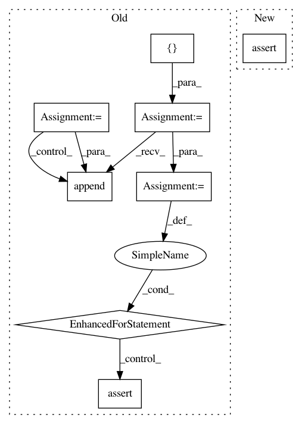

c2244d2a4cb5f86968fb117f75469283a19b8a24,tests/keras/backend/backend_test.py,TestBackend,test_sparse_concat,#TestBackend#,1855
Before Change
x_dense_2 = x_sparse_2.toarray()
// cntk not support it yet
backends = [KTF]
if KTH.th_sparse_module:
// Theano has some dependency issues for sparse
backends.append(KTH)
for k in backends:
k_s = k.concatenate([k.variable(x_sparse_1), k.variable(x_sparse_2)])
assert k.is_sparse(k_s)
k_s_d = k.eval(k_s)
k_d = k.eval(k.concatenate([k.variable(x_dense_1),
k.variable(x_dense_2)]))
assert k_s_d.shape == k_d.shape
assert_allclose(k_s_d, k_d, atol=1e-05)
@pytest.mark.skipif(K.backend() == "cntk", reason="Not supported.")
def test_map(self):
x = np.random.rand(10, 3).astype(np.float32)
vx = K.variable(x)
After Change
x_dense_2 = x_sparse_2.toarray()
k_s = K.concatenate([K.variable(x_sparse_1), K.variable(x_sparse_2)])
assert K.is_sparse(k_s)
k_s_d = K.eval(k_s)
k_d = K.eval(K.concatenate([K.variable(x_dense_1), K.variable(x_dense_2)]))
In pattern: SUPERPATTERN
Frequency: 3
Non-data size: 8
Instances
Project Name: keras-team/keras
Commit Name: c2244d2a4cb5f86968fb117f75469283a19b8a24
Time: 2018-10-21
Author: gabrieldemarmiesse@gmail.com
File Name: tests/keras/backend/backend_test.py
Class Name: TestBackend
Method Name: test_sparse_concat
Project Name: keras-team/keras
Commit Name: b95fcf7f52aca8ad0b1afb3cfc64c8eed534fafe
Time: 2017-07-29
Author: me@taehoonlee.com
File Name: tests/keras/backend/backend_test.py
Class Name: TestBackend
Method Name: test_function
Project Name: keras-team/keras
Commit Name: b95fcf7f52aca8ad0b1afb3cfc64c8eed534fafe
Time: 2017-07-29
Author: me@taehoonlee.com
File Name: tests/keras/backend/backend_test.py
Class Name:
Method Name: check_composed_tensor_operations